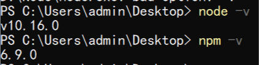
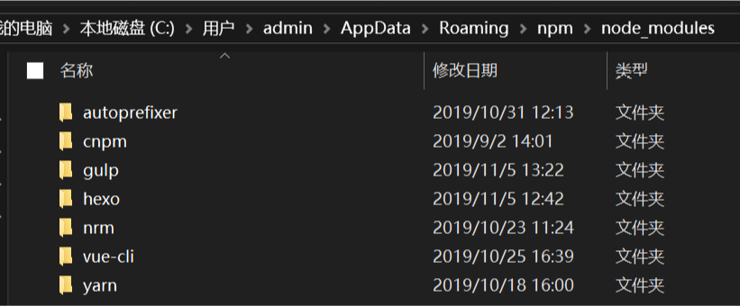
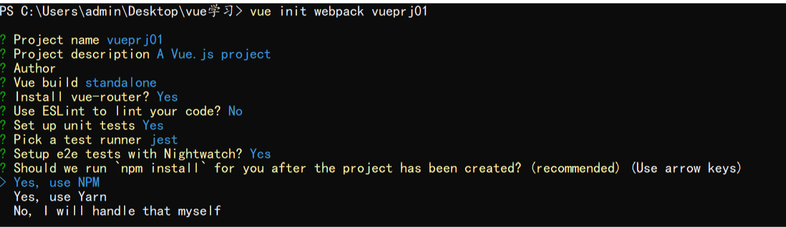
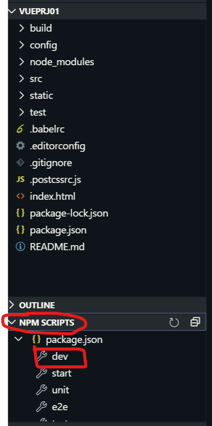
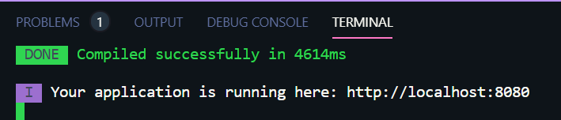
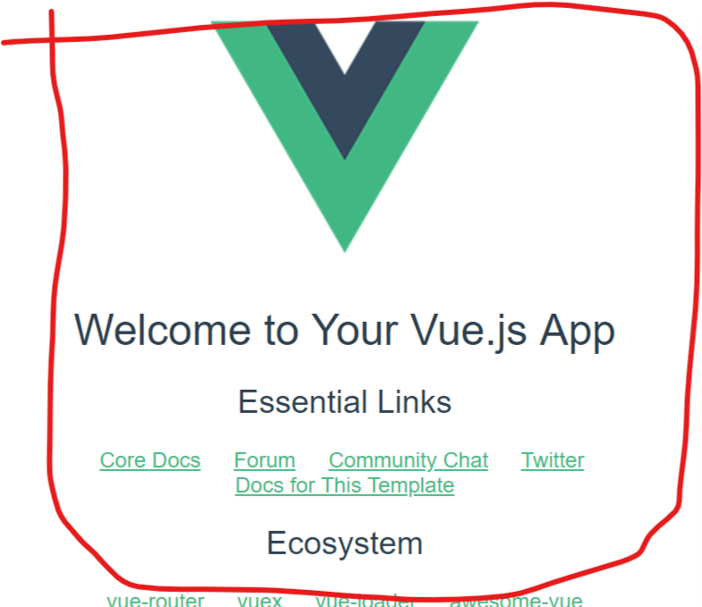
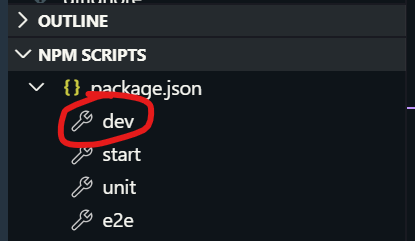
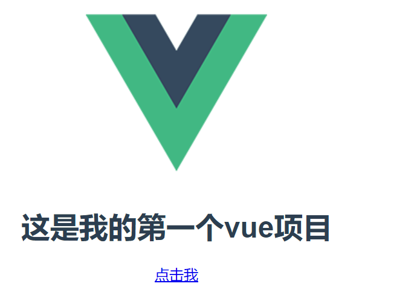
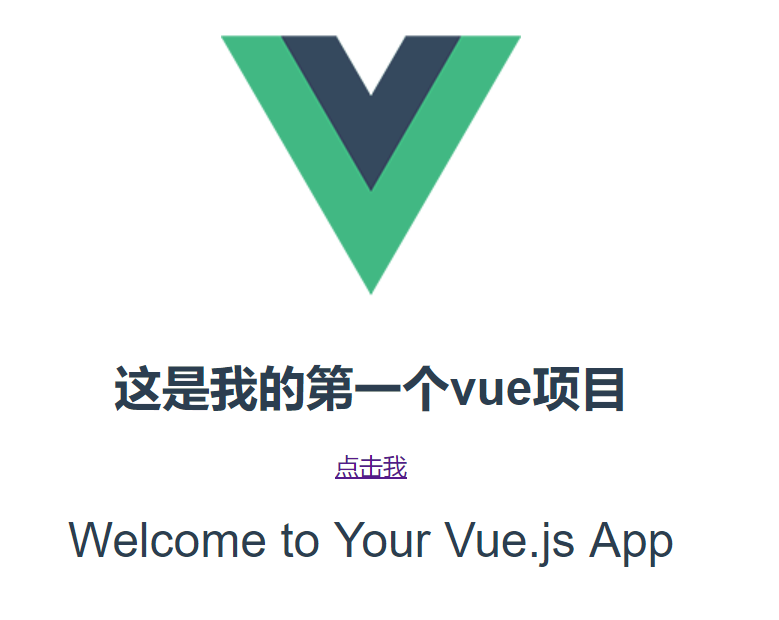

上一篇我们简单的看了看vue的基本用法，就是三步，首先就是用<script>标签引入vue的依赖，然后就是写html标签，在标签中用vue指令绑定一些属性，最后就是new Vue(xxx)实例，在这个实例中有很多的实例属性可以给html标签中那些绑定的属性赋值、或者是绑定事件函数；
这一篇我们来说说vue-cli这样的一个脚手架，快速搭建一个vue项目，注意我们的这个脚手架可以直接用npm下载，换句话的意思就是必须要有node环境，这里配置node的环境就不多说了。。。
vue-cli版本是2.x，现在有3.x版本的，目录和2.x版本的有一些区别，有兴趣的可以去看看
1.搭建vue-cli项目
如果你的node安装好了而且环境变量配置好了，那么输入以下指令应该有类似这样的输出

然后我们运行npm install -g vue-cli，全局安装一个vue-cli的模块，因为我们要经常使用的，全局安装只用下载一次就行了，以后就可以直接用，那么vue-cli具体的是下载到什么地方去了呢？默认安装在C盘对应的用户下的AppData目录下，我的目录是C:\Users\admin\AppData\Roaming\npm\node_modules，下图所示，这个安装路径就用默认的就行，想要自己修改的话可以自己搜索方法
只要是npm install -g xxx 安装的全局模块都会在这里，我下载了几个常用的

然后我们新建一个文件夹取名叫做 vue学习，用于存放我们自己将要写的vue-cli项目，用cmd进入这个文件夹，执行vue init webpack vueprj01 ，最后的这个vueprj01是项目名，随便定义，不要有特殊字符和大写字母就行，然后除了一个地方其他地方全部回车就好，下图所示
注意，新手的话，在下图中的Use ESLint to lint your code 这里一定要选择no，不然这里就是在你编译项目的时候做语法检查，贼不好用，即使是一个空格也会给你报错的

一路回车之后，一个项目就成功了，然后就等着下载那些依赖模块就行了，反正下载的文件很多，几分钟吧！完成之后我们用vscode打开这个vueprj01文件夹，技能看到下图所示的东西：

然后我们只需要在npm script那里，其实就是npm脚本，点击dev，整个项目就运行起来了；点击这个dev就行了（其实就是相当于在cmd中进入vueprj01中，执行npm run dev命令）
其实点击这里的dev和start是一样的效果，都可以，习惯点dev了，然后根据控制台提示访问http://localhost:8080，就可以看到效果了：


到此为止一个简单的vue-cli项目就搭建出来了，很容易，下面我们就来简单的使用一波
2.简单的使用vue-cli构建项目
在使用之前，我们需要先了解一点基础知识：
路由：也就是我们在创建项目的时候一直回车，有一个是install vue-router，这个就是路由，那么路由有什么用呢？举个不是很恰当的例子，就是路由器，当有个人都在用一个路由器的wifi的时候，为什么每个人都能访问不同的网站呢？这里就是有路由器的作用，可以分配不同的请求到不同的网站；在我们这里就是不同的url访问vue项目，首先路由就会根据你的url去调用不同的页面，然后渲染返回给你；
组件：在这里我们已经看不到我们上一篇的那种做法了，上一篇是在一个html中引入vue的依赖库，然后使用vue指令，new一个Vue实例；但是在vue-cli中我们要学会组件化开发的思想，就是任意的一个文件就是一个组件，无论是一个vue文件，css文件还是js文件等，都是一个组件，我们在使用之前，必须要引入；
组件的基本格式：由于每一个文件都是一个组件，所以格式也不一样，后面我们会慢慢说的，这里我们只说以.vue为后缀的组件，这文件分三个部分，这里面有一个<template></template>，这里就是写html标签的，注意，每一个template标签最外层必须有且只有一个div标签，然后你的各种html标签都要放在这个div标签中，如下所示；第二部分就是vue实例中的各种属性和钩子函数，导入第三方组件只能在第二部分导入；第三部分就是写css样式
<template>
//注意，最外层只能有一个div标签
<div>
<h1>我是h1标签</h1>
<div>我是div标签</div>
<table></table>
</div>
</template>
<script>
//这里就跟new Vue(xxx)中的各种属性一样使用
export default {
name:'',
props:[''],
data () {
return {
};
},
components: {},
computed: {},
beforeMount() {},
mounted() {},
methods: {},
watch: {}
}
</script>
//这里就是写css代码，这里的scoped表示该样式只在当页面有效，避免污染其他页面样式
<style lang='' scoped>
</style>
引入组件的方式有两种：
一种是类似这种，import Vue from 'vue'，import App from './App' ；（注意：引号里面的不用加后缀，引号里面的./表示的是当前文件所在的这一层目录），可能有人会奇怪vue这里没有加./也行吗？因为vue这个模块是系统模块，也就是通过npm下载的模块（注意，不是全局下载），默认是放在项目中node_modules中，要引用这里的模块可以直接引入，不用加./；
第二种方式，由于vue-cli项目是需要node环境的，于是可以用node引入模块的方式，例如const prodEnv = require('./prod.env')，其实和第一种方式一样的，当然，推荐使用第一种
vue-cli项目只有一个html文件，我们只是将这个html中的div标签内容和样式进行替换，这也叫做单页面开发
下面我们来简单使用一下，第一步，在src目录下新建一个Header.vue文件，
<template>
<div>
<h1>这是我的第一个vue项目</h1> </div>
</template>
<script>
export default {};
</script>
<style lang='' scoped>
</style>
第二步，在router目录下的index.js中，添加如下：
import Vue from 'vue'
import Router from 'vue-router'
import HelloWorld from '@/components/HelloWorld'
//引入我们自己定义的Header组件，可以不用加后缀，@默认表示目录src
import Header from '@/components/Header'
//这里表示Vue实例注册路由，换句话说有了这行代码我们的vue项目才能有路由分发的效果
Vue.use(Router)
export default new Router({
routes: [{
//这里随便修改一下，HelloWorld组件中随便改改，就不展示出来了
path: '/hello',
name: 'HelloWorld',
component: HelloWorld
},
{ //这里配置一个路径，当url访问xxx/head的时候，就会访问Header组件
path: '/head',
name: 'Header',
component: Header
}
]
})
第三步，修改APP.vue文件
<template>
<div id="app">
<img src="./assets/logo.png">
<!-- 这里使用我们引入的组件，只要是引入的组件都可以用标签的形式使用-->
<Header/>
<!-- 这里就是根据路由匹配到的组件内容，就是router-lingk标签对应的内容，会在这里插入进来 -->
<router-view/>
</div>
</template>
<script>
//引入Header组件
import Header from '@/components/Header'
export default {
name: 'App',
//在当前组件注册子组件Header，然后再上面的html中才能使用<Header/>
components:{
//这里相当于"Header":Header,当要取的组件名字和组件一样，可以用这种简写形式
Header
}
}
</script>
<style>
#app {
font-family: 'Avenir', Helvetica, Arial, sans-serif;
-webkit-font-smoothing: antialiased;
-moz-osx-font-smoothing: grayscale;
text-align: center;
color: #2c3e50;
margin-top: 60px;
}
</style>
最后你只需要点击vscode中的dev按钮，在浏览器输入http://localhost:8080/head，就能看到效果了；
 
然后点击那个链接"点击我"，路由就会起作用，就会访问Helloworld组件，并将它渲染到App.vue文件的那个<router-view/>标签这里

简单说说过程：
首先最外面是一个html，然后将APP.vue组件会通过某种方式编译成css，js等渲染这个html；
而这个APP.vue在项目编译的时候就会将导入的组件，如Header组件的内容给渲染进App.vue中<Header/>标签所在的位置，注意，此时还有一个<router-view/>标签可以看作是一个占位符，先抢到这个位置；
在Header组件中的router-link标签被渲染成一个a标签，所以我们在首页可以很清楚的看到有个链接，当我们点击这个链接的时候，就会根据路由，会匹配到HelloWorld组件，同时会把这个组件渲染到上一步说到的那个占位符的位置
3.总结
其实vue-cli简化了我们需要做的操作，而且全程我们感觉不到路由，主要是有很多定义的文件需要我们去好好看看，这次只是简单的测试了一下vue-cli，下一篇我准备简单的实现一下Vue动态绑定数据，总感觉不懂其中的原理用Vue写东西总是云里雾里的，贼难受啊